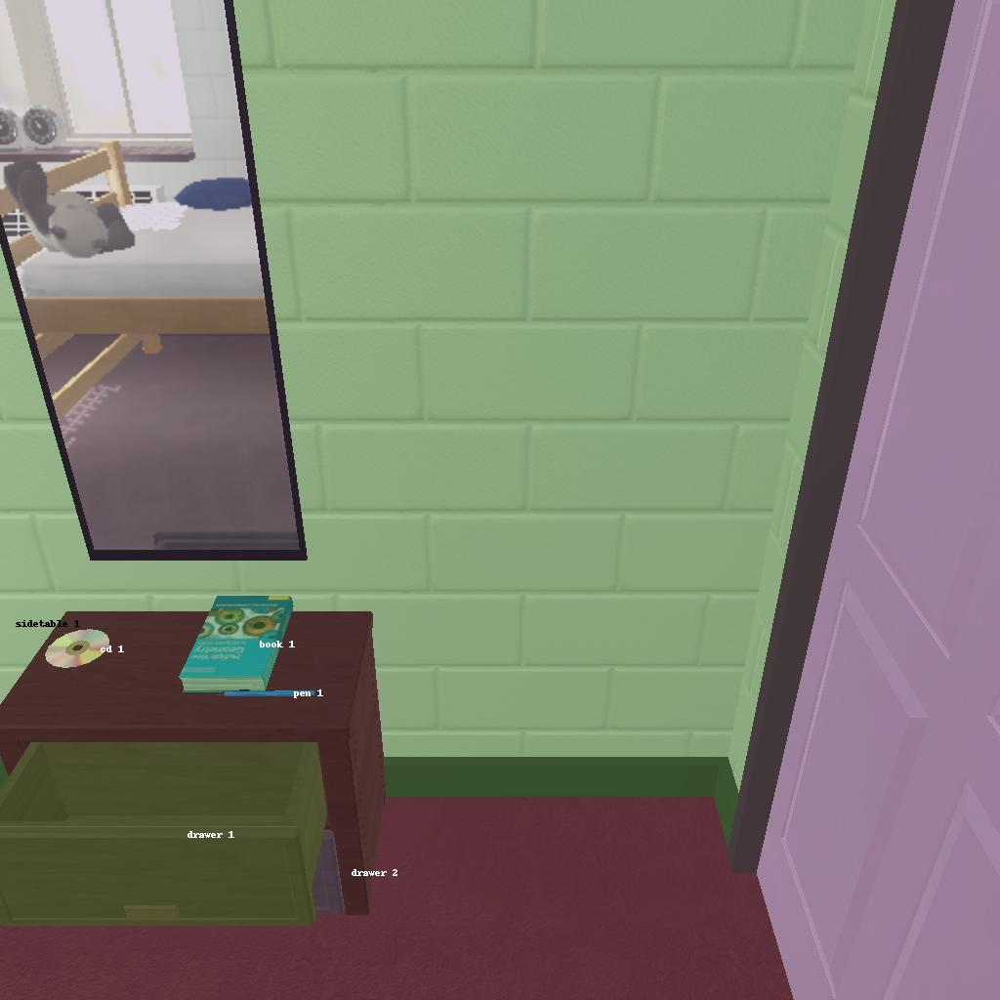

---------------------------------------------------------task: 8---------------------------------------------------------
--------------------------------------------------------------------------------------------------------------------------------------------------------------------
--------------------------------------------------------------------------------------------------------------------------------------------------------------------
Step:--------------------------------------------------------------------------18-------------------------------------------------------------------------------
----------------------------------------
VLM Prompt:
Image1:
**Instruction**
1. Analyze the provided image to identify all visible household objects, focusing on those relevant to the task description "put some laptop on desk."
2. Use the analysis of the image and the task hint "The agent must find an object of the desired type, pick it up, find the correct location to place it, and put it down there." to answer the question: what is the most reasonable action in the choices for the task description "put some laptop on desk"?
4. Decide and write the answer using the template: The answer is: (i): , where i is the real number. If there is no desired object in the image, search every place based on **Initial Observation** to find the object. And if no one is exactly correct, choose a similar answer.
**Initial Observation**
You are in the middle of a room. Looking quickly around you, you can see bed (1), garbagecan (1), desk (1), sidetable (1), drawer (1-5), laundryhamper (1)
**Answer Choices**
(1): go to bed 1
(2): go to garbagecan 1
(3): go to desk 1
(4): go to sidetable 1
(5): go to drawer 2
(6): go to laundryhamper 1
(7): go to drawer 3
(8): go to drawer 4
(9): go to drawer 5
(10): close drawer 1
(11): take book 1 from drawer 1
(12): take cd 1 from drawer 1
(13): take pen 1 from drawer 1
(14): examine drawer 1
**Answer**
Let's think step by step by following the instructions.
----------------------------------------
----------------------------------------
Original Response:
The task is to "put some laptop on desk," which means we need to find a laptop and place it on the desk. According to the initial observation, there is a desk (1) in the room, so that would be the correct location to place the laptop. However, in the image provided, there is no laptop visible. Therefore, we must search every place based on the initial observation to find the laptop.
Looking at the answer choices, none of them directly mention finding or taking a laptop. The choices involve going to various furniture items, taking other objects, or examining a drawer. Since the laptop is not likely to be in the garbagecan, laundry hamper, or on the bed, and it is not mentioned as being inside drawer 1 (which we can see inside in the image), we can eliminate those options.
The most reasonable action to find a laptop would likely involve checking the drawers that we have not seen inside yet, as laptops are often stored in drawers when not in use. The only options that involve checking a drawer are (5) go to drawer 2, (7) go to drawer 3, (8) go to drawer 4, and (9) go to drawer 5.
Since we have no specific information on which drawer might contain the laptop, we should choose the first unopened drawer in the sequence, which is drawer 2.
The answer is: (5): go to drawer 2.
----------------------------------------
----------------------------------------
>>> Refine Original VLM Response and Get Pure Action: go to drawer 2
----------------------------------------
-----------------------------------------------------------------
Running time: 14.060176372528076 seconds
Total Money: 2.5817400000000017
-----------------------------------------------------------------
-----------------------------------------------------------------
Text Observation:You arrive at loc 5. The drawer 2 is closed.
-----------------------------------------------------------------
UNSUCCEED